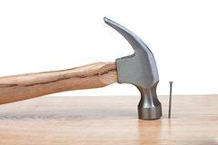
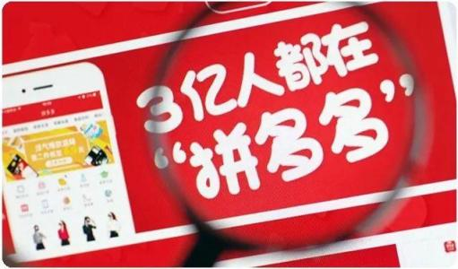
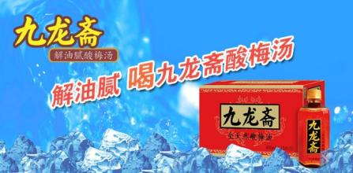
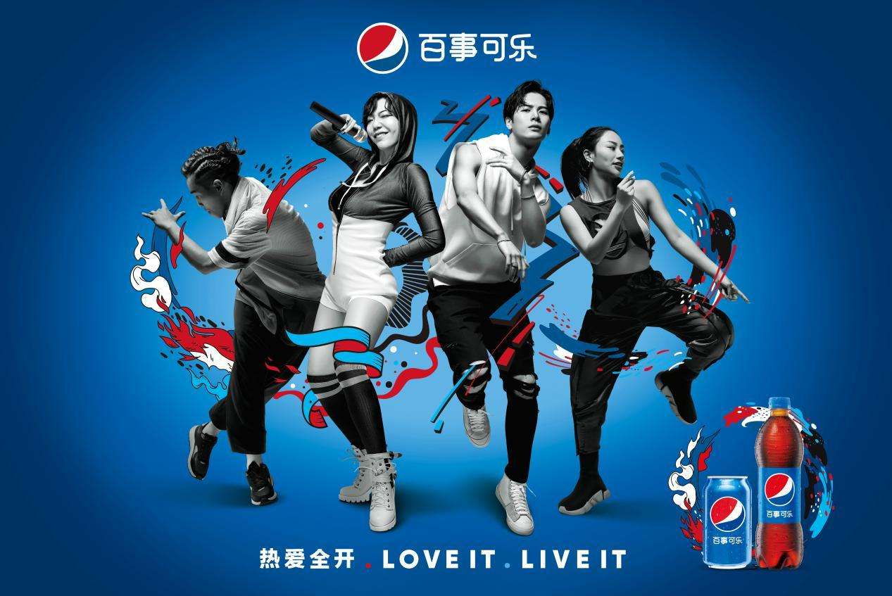

40年前，品牌定位之父杰克·特劳特与他的伙伴里斯提出了定位理论，至今为止，这套定位理论对于广告业界有着深远影响，并作为品牌定位的重要工具之一，指引着行业各项品牌执行工作。但是，在前段时间，网络上不断的有着这些“声音”出现：定位已经不适合新媒体时代· · · · · ，定位是“假大空”· · · · · · ，新时代要的是创意，不是定位· · · · “
毫无疑问，在互联网的冲击下，广告人推崇了几十年的“品牌定位”慢慢出现了一些“质疑的声音”，这些“声音”保留了他们对新时代商业行为的观点，也许这些看法可以颠覆品牌定位学，也许只是人云亦云，无可厚非。
海右博纳品牌在品牌营销&广告界实战十几年，却始终认为“定位”是建立品牌不可或缺的一环，而且在互联网大时代环境下，信息已被碎片化，甚至是粉尘化，群众注意力被分散，需要记住你，变得更难，而“品牌定位”在在商业经济体系中则占据重要的地位。
第一，针对市场，建立品牌区隔性，跳脱饱和竞争市场。
我们常说品牌要有鲜明的识别，这个识别主要包含两层意义——文字识别和视觉识别。
文字识别，即是我们说的slogan广告语，通过品牌定位要提炼属于品牌独有的文字钉子，这个钉子要瞄准消费的痛点，痒点或者爽点，这样的“文字钉子”才足以形成识别性。
视觉识别，即是视觉符号标志，一个优秀的视觉符号，就是我们所说的视觉锤，是对品牌的诠释，我们会发现人类很难记住文字，但是很容易记住图像，因为它更具体生动。
所以，我们说品牌定位也是通过打造“文字钉子”和“视觉锤”，建立识别性，利用视觉锤工具将品牌“”钉“消费者心里”，让消费者记住你。

第二，针对消费者，建立品牌信任状，降低消费者决策的时间和风险。
在生活中，我们会发现这样现象，如果你是业内专家，行业明星，权威人士，你说的每一句话，别人可能更容易相信，毕竟人贵言重。所以“品牌定位”的过程，也是在树立品牌信任状。
信任状是品牌沟通的重要一环，被认为是品牌在消费者心智中的担保物，品牌通过强调自己的信任状，来提高品牌的可信度，为顾客提供选择品牌的理由。
比如加多宝；品类是凉茶；和其它凉茶有何不同：凉茶行业领导者；凭什么说领导者：10罐凉茶七罐加多宝（这就是品牌信任状）
比如拼多多，如何让消费者相信它：3亿人都在用的购物网站。（这就是品牌信任状）

所以我们说，品牌定位就是认知＞事实，有时候事实无光紧要，重要的是人们心智中已有的认知。消费者的决策往往凭印象，他们不会再去网上搜索你到底是不是真的是“正宗”或者“真的有3亿人”？所以，品牌定位是在建立信任状，也是在建立品牌美好印象的过程。
那么，我们如何利用品牌定位理论去建立品牌呢？
海右博纳认为品牌定位是个工具箱，箱子里面还有很多工具。一个企业在市场上遇到千千万万的问题，但是归根结底，问题只存在于三个层面，要么是产品问题，要么是用户问题，要么是竞争问题。而品牌定位策略就是解决具体的问题，针对不同的问题，品牌定位工具箱里面有以下三大工具：USP定位，品牌形象定位、品类定位。
| USP
又叫独特的销售主张，诞生于二战后，美国国内百废俱兴，商业逐渐繁荣起来。这个时候，企业要想卖出去产品，最简单的办法就是告诉别人你的产品有什么好处，能为用户解决什么问题。
USP理论的要点有三条：
1、每一则广告必须向消费者提供一个主张，让其明白购买广告中的产品可以获得什么利益；
2、主张必须是独特的，是竞争对手没有的、做不到的，或者说是竞争对手有，但没有说出来的；
3、主张必须是有销售力的，强而有力地聚焦在一个点上，集中打动、感动消费者。
比如：经常用脑，多喝六个核桃
比如：解油腻，喝九龙斋。

这都是很典型的USP理论应用，解决的就是一个产品层面的问题，向消费者传递一个独特有销售力的产品功能主张和卖点，塑造差异化功能价值，来长久赢得市场的青睐。
| 品牌形象定位
又叫标签定位。随着竞争日趋激烈，市面上生产类似商品的企业也在增多，这时候就不可避免的造成了一个问题——产品同质化。产品同质化之后，很多企业就找不到自己的USP了。这时候，企业就只好另寻出路。
对于消费者也一样，比如我想买瓶啤酒，但是不同企业生产的啤酒没什么区别，口味差不多，品质差不多，价格差不多。
那么我该怎么选呢？那就随便拿一瓶吧，或者说哪个看起来顺眼就买哪个。用专业一点的术语，这叫做：产品同质化，造成消费者决策主要依赖感性而非理性。因此，描绘品牌形象标签比强调产品具体功能重要的多。既然产品上没有差异化了，那就形象上情感上差异化吧。所以这个时候诞生了大名鼎鼎的BI——品牌形象论。
比如：百事可乐跟可口可乐产品上没有区别，那就塑造一个年轻的品牌形象

比如：优乐美的奶茶跟香飘飘没有区别，那就塑造一个浪漫爱情的形象。
| 品类定位
又叫心智定位。我们说建立一个品牌，首先学会从品类的角度去思考，然后来考虑品牌。而品类不在于产品，而在于心智，它是对心智信息的归纳，通过定义新品类，建立新认知。
比如 ：江中猴菇，养胃的饼干
比如：沃尔沃·安全汽车
我们会发现，品类定位是进行品类的分化，江中猴菇分化了“养胃饼干”与非养胃的普通饼干区分开，沃尔沃分化出“安全的汽车”，与其它汽车区分开来，那其他汽车就不安全了吗？我不知道，我就知道沃尔沃是安全的汽车，这就够了。所以，品类定位的过程也是在创造新的顾客群和需求。
最后总结一下：
|USP理论强调要传播产品本身的功能主张来让消费者埋单；
|品牌形象论强调要通过塑造形象、传递情感来赢得消费者好感；
|定位论则强调要通过占据品类来区隔竞争对手，被消费者熟知。
那么，你的品牌需要要通过什么方式进行定位，具体还要看企业想要解决什么问题，产品或服务本身的属性特征，以及市场竞争环境的现状，从而去寻找突破之处，发现品牌的发展机遇。希望以上内容对贵公司未来的发展有启示作用。


济南海右博纳品牌营销咨询有限公司
Copyright 2001-2019 All Rights Reserved Sivibrand.
王伟品牌顾问微信